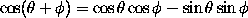
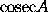
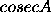

![[GIF Image]](DM_stdfns.gif)
The names of certain standard functions and abbreviations are
obtained by typing a backlash \ before the name.
For example, one obtains
by typing
\[ \cos(\theta + \phi) = \cos \theta \cos \phi
- \sin \theta \sin \phi \]
The following standard functions are represented by control sequences
defined in LaTeX:
Names of functions and other abbreviations not in this list can be
obtained by converting to the roman font. Thus one obtains

by typing $\mathrm{cosec} A$.
Note that if one were to type simply $cosec A$ one
would obtain

because LaTeX has treated
cosec A as the product of six quantities
c, o, s, e, c and A
and typeset the formula accordingly.